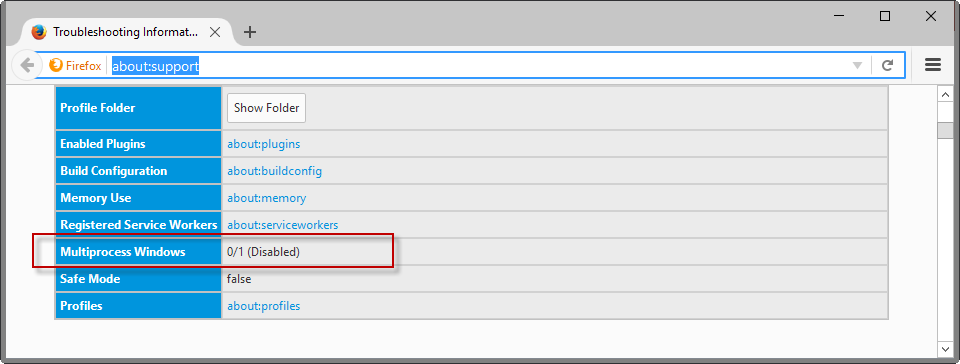
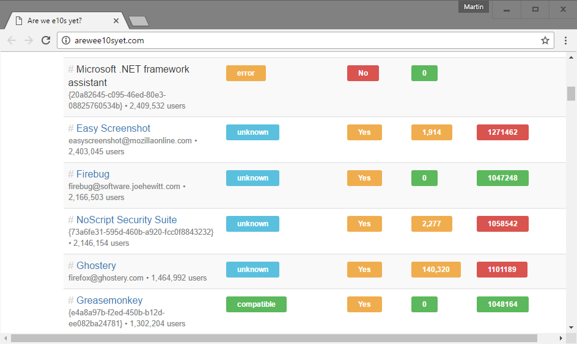
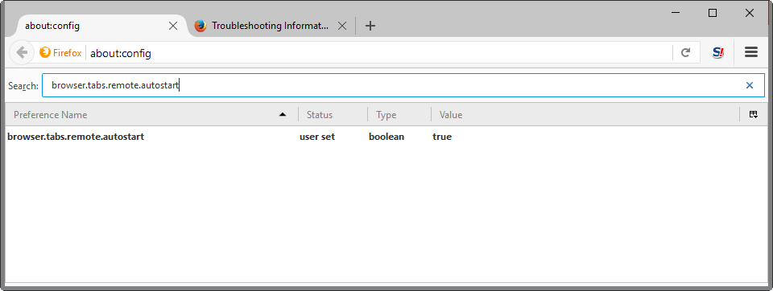
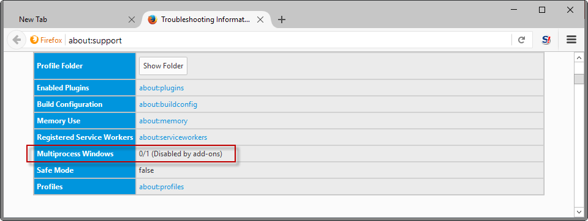
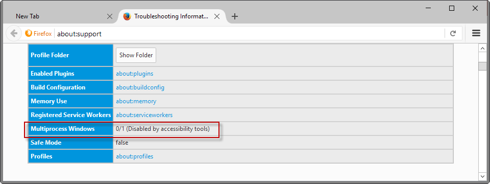
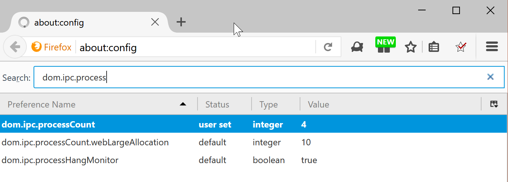
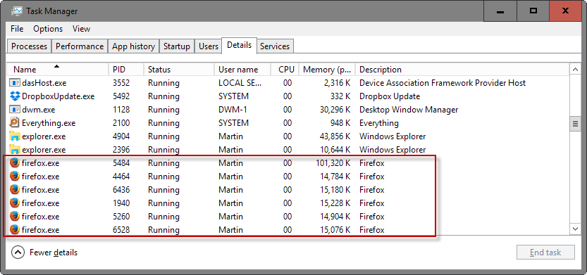

After years of development and several delays, multi-process Firefox, also known as Electrolysis or e10S, is about to be enabled for a subset of Firefox stable users.
The following guide provides you with information about Firefox's multi-process architecture. It explains what the feature offers, preferences and switches for it, covers add-on compatibility, and takes a look at the future of the feature.
Mozilla plans to enable the multi-process architecture for a subset of Firefox Stable users when the browser reaches version 48. If things go as planned, Firefox 48 will be released on August 2, 2016.
The multi-process rollout has started, and is ongoing (as of Firefox 52). Mozilla plans to increase the number of content processes to four for the stable population in Firefox 54.
Multi-Process Firefox
Electrolysis functionality hosts, renders, or executes web related content in background child processes which communicate with the "parent" Firefox browser via various ipdl protocols.
The Multi-process architecture improves the browser's stability, performance and security by separating tasks into processes.
The first iteration of multi-process Firefox moves NPAPI plugins, media playback and web content to child processes thus separating them from the browser's core.
Find out if Multi-process support is enabled

The easiest way to find out whether multi-process Firefox is enabled is the following one:
- Load about:support in the Firefox address bar.
- Locate "Multiprocess Windows" under Application Basics near the top.
It should read enabled or disabled, and gives you a direct answer about the state of multi-process functionality in the browser.
Enabling Electrolysis in Firefox
If multi-process support is not enabled yet in Firefox, you may enable it manually. This is true even if you run Firefox 47 Stable as the functionality is already there.
Before you do so, you may want to run compatibility checks for add-ons though. If you don't run add-ons, about 40% of Firefox users don't according to Mozilla, you may skip the step.
Verifying add-on compatibility

While you can jump into water right away by enabling Electrolysis without verifying compatibility first, it is highly suggested to verify that all important add-ons are compatible with e10s before you do so.
You may check out the Are We e10S Yet site which lists top add-ons and their compatibility with e10s. The majority of Firefox add-ons are not tested though so that you may be none the wiser after checking your add-ons on the site.
What you can do, is create a secondary profile in Firefox, copy all extensions of the first profile to it, and enable e10s for that secondary profile.
This is far from ideal though. An alternative is to disable all add-ons, enable e10s, and enable extensions one by one to find out whether they are compatible.
Enable / Disable Electrolysis in Firefox

To enable or disable multi-process Firefox, do the following
- Type about:config in the browser's address bar.
- Confirm that you will be careful.
- Search for browser.tabs.remote.autostart.
- Double-click on the preference.
Setting the value of browser.tabs.remote.autostart to true enables the multi-process architecture in Firefox, setting it to false disables it.
Please note that you need to restart the browser when you change the preference's value.
Some configurations, if accessibility is used or add-ons are incompatibility, prevent Electrolysis from being enabled.


The about:support page mentioned previously list the reason so that you know why multi-process is not working.
You may force-enable multi-process functionality in Firefox. I recommend that you backup your user profile before you do.
- Type about:config in the browser's address bar and hit enter.
- Right-click and select New > Boolean.
- Name it browser.tabs.remote.force-enable.
- Set its value to true.
Note that forcing compatibility may have a big impact on performance if add-ons are incompatible with e10s.
There is another preference that you may need to change on about:config.
- Search for extensions.e10sMultiBlockedByAddons
- Set the preference to false.
This prevents the blocking of multiple content processes by add-ons.
Changing the number of content processes

Mozilla Firefox uses one content process by default right now when multi-process Firefox is enabled. Mozilla plans to change that in Firefox 54 by increasing the number of content processes to 4 in that version.
You can modify the count right now, to raise or decrease the limit. Note that Firefox will ship with an option in the browser's settings eventually that lets you do that.
- Type about:config in the browser's address bar and hit enter.
- Search for dom.ipc.processCount.
- Double-click on the value, and change it. The number you enter is the number of content processes that Firefox will use.
When Multiprocess Windows is enabled

You can check the about:support page in Firefox to find out whether multi-process is enabled or not.
You will notice several firefox.exe processes when you run a process manager, e.g. the Windows Task Manager which highlights that Electrolysis is enabled.
Firefox should for the most part run just like before. Ideally, enabling multi-process functionality should improve the browser's performance and stability right away.
You may however notice a higher than usual RAM usage. Mozilla confirmed that Firefox with Electrolysis will use about 20% more RAM.
You may change how many processes Firefox uses for its multi-process functionality.
The future
Mozilla will continue to work on multi-process Firefox after the initial roll out of the feature. The organization plans to bring sandboxing to Firefox which, on Windows, is based on the Chromium sandbox that Google uses in Chrome. This sandbox will improve security significantly when enabled.
Now You: What's your take on the coming roll out of e10s in Firefox?

Hmmm . . . then what is the Servo project that Mozilla is working on? A completely different browser engine that will eventually be enabled for Windows since it's only a Linux alpha build at this time?
https://servo.org/
https://www.phoronix.com/scan.php?page=news_item&px=MTgzNDA
https://aur.archlinux.org/packages/servo-latest/
https://www.maketecheasier.com/firefox-web-rendering-engine-servo-linux/
Actually, Windows Nightly versions are now available: https://github.com/servo/servo/issues/12125#issuecomment-232152174
I am really wondering what is the point of using a multiprocess browser if it's the engine that needs the tuning and tweaking. If a multiprocess browser uses more RAM/CPU, the goal of lean and efficient browsing is defeated. If, however, a new engine provides more speed for less RAM and CPU usage, then users may want to try Servo on Linux--no Windows yet--and Mozilla may want to forge ahead with a project that is truly a genuine change.
The main appeal of multi-process if you ask me is the security aspect. Firefox is super stable on my system, and I hope that the introduction of multi-process functionality won't change that for the worse.
e10 also eliminates a lot of jank that has been with Firefox for as long as I remember. If you have a SSD then it won't be noticeable most of the time. Any thing slower like a hard drive or those slow drives in those Windows tablets then it is pretty noticeable.
The main appeal I see for multiprocessing is that Firefox can then finally use multiple cores of my computer's processor; if I have a page that takes a long time to load (such as my Netflix disc queue--it is over 400 titles long), without multiprocessing I can do nothing else in Firefox until it finishes loading. But if each tab had its own process, the queue could be loading and I could be doing something else in another tab that would be using a different core of the processor.
So, yes, Firefox would end up taking more memory, and using more CPU cycles, but the use of multiple processes to be able to use multiple cores improves response time--as long as the computer isn't memory-starved.
Right now I am using Chrome, which indeed has a process per tab, plus a process for the interface, plus a process per add-on (for sandboxing), and launching and loading multiple tabs in Chrome is far faster than launching and loading multiple tabs in Firefox.
I will be glad when Firefox and the add-ons I use catch up!
@jasray,
The main advantage for me is that a rogue javascript won't freeze the whole browser, just the tab that's running the JS.
Aren't multiprocess browsers more ram demanding? I mean, I am using Vivaldi, and right now with 4 tabs it's consuming around 300-350ram... while multiprocess browsers open a process for each tab and extension, single process browsers just add some more ram usage...
For Firefox, you can define how many processes it uses with this setting:
dom.ipc.processCount
I recommend to set it between 2 and 10 .
You can't do this in any other browser. Only Firefox has a setting to change the amount of processes. It's another Firefox-exclusive feature.
Actually,I think the easiest way to find out whether multi-process Firefox is enabled is ti simply over the mouse cursor over a tab to make it's title popup, if it says "e10s" at the end, it's enabled.
As for the website Arewee10syet.com, that one is now mostly broken and useless as many add-ons now have "Error fetching data from AMO" as a title.
As an example, I know that Privacy Badger was listed in an earlier version of the page, but now I cannot find it and I highly suspect it is one of the "Error fetching data from AMO" entry
Edit: For those wondering, Privacy Badger doesn't work yet with e10s.
That doesn't seem to work? Maybe that works in Nightly?
If no e10s shows, it means it's not activated. Worked for me in FF 48 and 49 Dev edition.
I think you are wrong. The support page, and taskmanager both clearly show I have e10s enabled, but hovering over a tab does not say "e10s" in the popup.
All my extensions work with e10s ^^ I ditched Screengrab because the functiopnality is available in Firefox natively and today asked me to allow some ad..? o.O Nothankyou
imgur com/QWTDbs6
I don't use uMatrix, but I said to try if it's compatible (ofcourse it is..)
Ugh, just read this: " The organization plans to bring sandboxing to Firefox which, on Windows, is based on the Chromium sandbox that Google uses in Chrome. "
Rant: Does anyone knows on what exactly the Moz foundation is wasting their millions of money on? Not innovation for sure. Looks to me all their devs do is copy/paste code from chromium now, years after it first appeared in Chrome though. They even created the WebEntension API to be able to be 100% compatible with chrome extensions so they could copy more easily!!! So is this the norm now? That if a feature doesn't make it in chromium first, FF won't ever develop it either? Infuriating really.
It does reflect what a dev once wrote in a bug I opened about supporting the U2F protocol in Firefox: That they "might" do it if someone would find the time to analyse how it was done in chrome. Ugh, whatever happened to reading a standard spec and writing the code for it!!!!!
@Kin - e10s is the best thing to ever happen to Firefox imo. It has transformed it from a slow, bloated beast into a lightning fast modern web browser. The difference is similar to when I upgraded from a HDD to an SSD.
"...create a secondary profile in Firefox, copy all extensions of the first profile to it..."
would be safer to freshly (re)install any desired addons into each newly created profile. Some extensions store configuration and settings in files pathed to subdirectories under the profile, and reference hardcoded strings which point to the expected path. Problematic scenario occurs when an extension that has been copied to profile2 winds up reading/writing to the datafiles present in profile1 subfolders
not working for me on win32/64 47.0.1
What is not working?
i get enabled by user with disabled addons but there is only one process in task manager.
Working great in Firefox 48b9 64-bit. But it keeps switching between 1/1 and 2/2 on the about:support page.
Some add-ons are incompatible so I forced the multi-process feature and it says enabled in about:support but instead of multi firefox.exe processes I got multi plugin-container.exe. Any ideas why this is happening?
It runs far better, its using more ram/cpu but with 16gb it's fine for me.
Plugin container is used to separate plugins from other browser processes. See: https://www.ghacks.net/2011/10/27/why-are-2-plugin-container-exe-processes-running/
I have forced the multiprocess in Firefox 47.0.1 64 bit and if I open Windows Task Manager (win 8.1) I don't see several "firefox.exe" like on your screenshot... Is that normal?
(In about:support multiprocess is enabled.)
That's strange. I tested it again using a new profile. First restart, I got only one firefox.exe process, then on the second restart, multiple processes started to be used. Do you see plugin-container processes?
Yes I see many plugin-container processes if I open several tabs.
As far as I understand it, and I have not done a lot of research into the matter, you should get one firefox.exe process, and one plugin-container.exe process, plus one additional plugin-container.exe process for each plugin that is active.
I don't really know why I sometimes get lots of firefox.exe processes, maybe this is a change that is tested already.
Maybe someone else with deeper knowledge could lift the confusion.
Right now, FF is using 400k with a mere 8 extensions running and 19 tabs open. I surely do not want it to use any more. Thanks for telling us how to turn Multi-processing off.
400K would be really good ;)
Any easy way to find out which addon disabled multiprocess or I have to check by disabling addons one by one?
I switch the e10 function on around 30 minutes ago and I am really liking the affects, I certainly consider it a welcome improvement so far, things seem a lot snappier as I have been browsing around, the browser that I am using is actually using around 50% less ram than it was before I switched the function on, I will assume that this has to do with the incompatibility of some of the add-ons that I have integrated into the browser, I am liking the affects so much that I am going to go ahead and just leave electrolysis on for now, I would rather keep it on and deal with the shortcomings than wait until the end of the year when this function is scheduled to be made fully available.
it would appear that the other 50% went to the new Plugin Container for Firefox process
"When Multiprocess Windows is enabled"
How do you know that any of those services/firefox aren't spyware, tracking telemetry, or hooked up to your libraries file?
After all the developers did enable Linux so did Windows 10?
Inquiring minds want to know.
Also not working for me
I double clik on browser.tabs.remote.autostart
then I have "disabled by addons) message
then i create boolean browser.tabs.remote.force-enable
and although about:support says "enabled by user"
process explorer shows 1 single process no matter how many tabs i have open.
I checked Are We e10S Yet but many of my addons are not listed and some of the most popular like Noscritp and flashgot have "unknown" tag...
Mr. Brinkmann, I am so out of my league here. I Googled 'what is firefox multi process' and clicked on your page's link because it said 'Everything You Need To Know...'. I've read all the comments and replies on this particular page and I'm more confused than ever!
I do have multi-process stage rollout (1.3) - is there any way you would be willing to explain what this is to me in total laymans' terms or maybe provide a link that would answer my question in the most basic of terms?
Thank you in advance.
Mishell, well it is rather technical. Think of it as this way. Firefox without multi-process bundles all sites, the browser interface, plugins, and everything else in a single process. If one part of it crashes, slows down or behaves in a problematic way, it impacts all of the browser.
With multi-process, Firefox separates itself (the UI and core) from websites. This means that a crashing site has no impact on Firefox's stability anymore as a whole.
Thank you Mr. Brinkmann. It's been so long since I asked the question I don't remember why I asked it anymore. lol I do understand your explanation to me, but as I'm reading others' questions and remarks I may as well be reading a foreign language.
In the most basic of terms, is there anything that I need to do, if so what, and layman's instructions would be most appreciated.
P.S. I am running Windows 7
It still stinks. FF 50.1.0 still sneaks around and experiments with multiprocess, and every time it does, my machine becomes unstable - FF's main process's CPU usage goes up to 99% and sticks there, and (the visible) FF becomes totally unresponsive until I kill the second process. It just happened to me moments ago, with browser.tabs.remote.autostart set to false, and with about:support showing Multiprocess Windows 0/1 (Disabled). The second FF process (the disruptive one) is definitely a child of the main FF process, according to ProcessExplorer; it's not a virus or an MBAM masquerade.
@TDHofstetter it looks like an Add-on is creating this problem. You can check here "http://arewee10syet.com/" for compatibilty of Add-ons. Also check whether hardware acceleration is enabled or not.
Good try, but I only have one add-on enabled: the Cisco OpenH264 Video Codec.
At any rate, when I've set my FireFox to disable multiprocess, it SHOULD NOT ATTEMPT multiprocess!
@TDHofstetter I seems i can't reproduce this behavior of FF, maybe it is a bug specific to your hardware/0S. I my case when "browser.tabs.remote.autostart" is set to false, and with about:support showing Multiprocess Windows 0/1 (Disabled), there is only single FF process (with 8 tabs open). May be in your case a separate process is running for plugins(FF plugin container) eg. flash just like in previous versions of FF(without multi-process support)
It's likely to be difficult to reproduce - in my case, it only happens once every day or so, and since I work remote as a software engineer, I have my browser lit up for about sixteen hours a day. It was happening constantly when I stepped to 50.1.0, so I disabled multiprocess... and since I did that, it only happens occasionally. It's infuriating when it happens - I'm nearly to the point of writing a little app that just watches for a second Firefox process and kills it automatically.
The devel team needs to know that SOME of us DO NOT WANT multiprocess. That's one of the reasons I don't use Chrome as my go-to browser instead of FireFox. Safari has other big issues, and I just don't like Opera very much. IE? Ya, right. 8)
Here we go - moments ago: http://i66.tinypic.com/2vi5pxy.jpg
"The devel team needs to know that SOME of us DO NOT WANT multiprocess."
Firefox has by far the worst security of any major browser besides IE and e10s multiprocess is a completely necessary part of upgrading the infrastructure to give FF modern security features.
Because of a design quirk? Other browsers seem to do fine without going multiprocess. I'm not sure I can think of any inherent monoprocess security issues.
Any sign of a modern 64 bit Firefox yet?
It'd be nice just to get a bug-free 32-bit version... 8)
While this is an old article I was recently directed to it re a problem I'm having with the multi-task feature, so I'm adding a comment in case anyone else finds this page via google or is referred to it. On a few machines the multi-task feature causes all tabs in FF to crash as soon as they load (even booting FF with a blank tab in safe mode!), giving the message "Gah, your tab just crashed!" Reinstalling and/or creating a new profile (with no addons) makes no difference. If you get the mysterious Gah error you need to turn multi-tasking off by making sure both "browser.tabs.remote.autostart" and "browser.tabs.remote.autostart.2" are set to false, as mentioned above. Restart FF and problem fixed (or at least bypassed until a future update resets the settings).
That's a biter! It's also well worthy of a BugZilla report. I filed one for the multiprocess override problem I've been having (can't turn off multiprocess), and at least for now my issue seems to have abated per some sneaky FF update. I still monitor it with the "FireFox Second-Proccess Jäger" application I wrote, which kills any FF child process.
I have the same problem.
The link provided ... https://arewee10syet.com/ ... crashes Firefox 54.
I have Windows 7 Home Premium Service Pack 1 on a Dell notebook XPS L702X I followed the procedure to turn on multiprocessing. It indeed started just one process, instead of three. However, when I tried to open my mail (Outlook Web) it brought up the login panel but failed to connect to the server after I entered my username/password. I had no no problem reaching other web sites like cnn.com or nytimes.com. After I reversed the change all is working again but it starts with the three process.